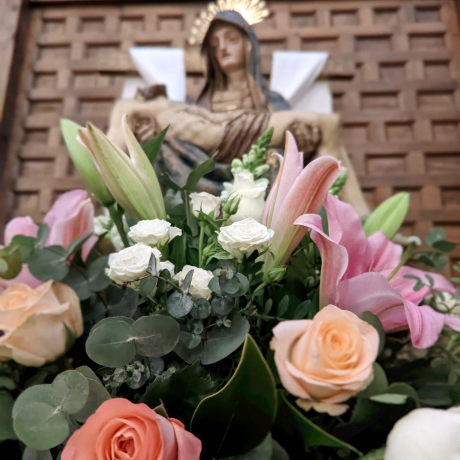
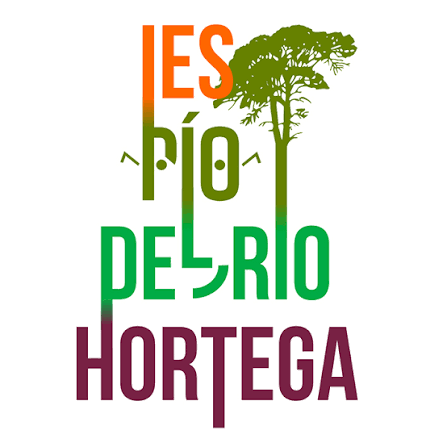
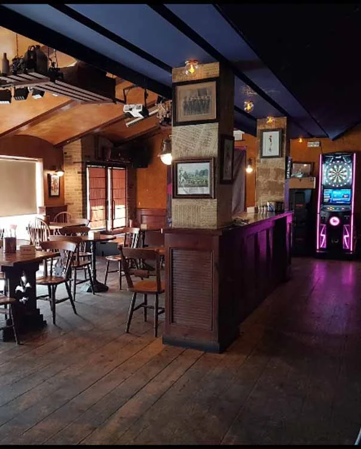

<!DOCTYPE html>
<html lang="es">
<head>
    <meta charset="UTF-8">
    <meta name="viewport" content="width=device-width, initial-scale=1.0, maximum-scale=1.0">
    <meta name="theme-color" content="#16324f">
    <title>Mapa interactivo de Arrabal de Portillo</title>

    <link rel="preconnect" href="https://unpkg.com">
    <link rel="stylesheet" href="https://unpkg.com/leaflet@1.9.4/dist/leaflet.css">
    <link rel="stylesheet" href="https://fonts.googleapis.com/css2?family=Montserrat:wght@500;700;800&display=swap">

    <style>
        :root {
            --ink: #16324f;
            --accent: #f4a261;
            --paper: #fffdf8;
        }

        * {
            box-sizing: border-box;
        }

        html, body {
            width: 100%;
            height: 100%;
            margin: 0;
        }

        body {
            overflow: hidden;
            font-family: "Montserrat", Arial, sans-serif;
            color: var(--ink);
            background: var(--paper);
        }

        #mapa {
            width: 100%;
            height: 100vh;
            height: 100dvh;
            background: #dce7ed;
        }

        .leaflet-control-layers {
            border: 0;
            border-radius: 10px;
            box-shadow: 0 5px 18px rgba(22, 50, 79, 0.25);
            font-family: "Montserrat", Arial, sans-serif;
        }

        .leaflet-control-layers-toggle {
            width: 38px;
            height: 38px;
        }

        .leaflet-control-zoom a {
            color: var(--ink);
        }

        .leaflet-popup-content-wrapper {
            border-top: 5px solid var(--accent);
            border-radius: 12px;
        }

        .leaflet-popup-content {
            width: 230px !important;
            margin: 16px;
        }

        .popup h3 {
            margin: 0 0 6px;
            color: var(--ink);
            font-size: 17px;
        }

        .popup p {
            margin: 7px 0;
            line-height: 1.45;
            font-size: 13px;
        }

        .popup img {
            width: 100%;
            height: 145px;
            display: block;
            object-fit: cover;
            border-radius: 8px;
        }

        .popup a {
            display: inline-block;
            margin-top: 3px;
            color: #1565c0;
            font-weight: 700;
            text-decoration: none;
        }

        .custom-marker {
            filter: drop-shadow(0 3px 3px rgba(0, 0, 0, 0.28));
        }

        .shape-info {
            max-width: 220px;
            font-size: 13px;
        }

        @media (max-width: 600px) {
            .leaflet-control-layers-expanded {
                max-width: calc(100vw - 80px);
            }

            .leaflet-popup-content {
                width: 210px !important;
            }
        }
    </style>
</head>
<body>
    <main id="mapa" aria-label="Mapa interactivo de Arrabal de Portillo"></main>

    <script src="https://unpkg.com/leaflet@1.9.4/dist/leaflet.js"></script>
    <script>
        const mapa = L.map("mapa", {
            zoomControl: false,
            scrollWheelZoom: true
        }).setView([41.4741, -4.5912], 15);

        L.control.zoom({ position: "topleft" }).addTo(mapa);

        const osmStandard = L.tileLayer(
            "https://{s}.tile.openstreetmap.org/{z}/{x}/{y}.png",
            {
                maxZoom: 19,
                attribution: '&copy; <a href="https://www.openstreetmap.org/copyright">OpenStreetMap</a>'
            }
        ).addTo(mapa);

        const openTopoMap = L.tileLayer(
            "https://{s}.tile.opentopomap.org/{z}/{x}/{y}.png",
            {
                maxZoom: 17,
                attribution: '&copy; <a href="https://www.openstreetmap.org/copyright">OpenStreetMap</a>, ' +
                             '<a href="https://opentopomap.org">OpenTopoMap</a>'
            }
        );

        const popupFlores = `
            <div class="popup">
                <h3>Flores Goyi</h3>
                
                <p>Una floristería local para regalar detalles en cualquier ocasión.</p>
                <a href="https://floresgoyi.com/" target="_blank" rel="noopener">Visitar Flores Goyi ↗</a>
            </div>`;

        const popupInstituto = `
            <div class="popup">
                <h3>IES Pío del Río Hortega</h3>
                
                <p>Centro educativo del municipio que ofrece enseñanza secundaria.</p>
                <a href="https://iesvilladevalderas.es/" target="_blank" rel="noopener">Web del instituto ↗</a>
            </div>`;

        const popupKache = `
            <div class="popup">
                <h3>Restaurante Kache</h3>
                
                <p>Restaurante conocido por su carta de hamburguesas y comida rápida.</p>
            </div>`;

        const iconoPrincipal = L.icon({
            iconUrl: "https://raw.githubusercontent.com/pointhi/leaflet-color-markers/master/img/marker-icon-2x-gold.png",
            shadowUrl: "https://unpkg.com/leaflet@1.9.4/dist/images/marker-shadow.png",
            iconSize: [25, 41],
            iconAnchor: [12, 41],
            popupAnchor: [1, -34],
            shadowSize: [41, 41],
            className: "custom-marker"
        });

        const flores = L.marker([41.475500, -4.596099])
            .bindPopup(popupFlores);

        const instituto = L.marker([41.473337, -4.589762], { icon: iconoPrincipal })
            .bindPopup(popupInstituto);

        const kache = L.marker([41.472660, -4.590471])
            .bindPopup(popupKache);

        const grupoMarcadores = L.layerGroup([flores, instituto, kache])
            .addTo(mapa);

        const rutaLocal = L.polyline([
            [41.475500, -4.596099],
            [41.475000, -4.594500],
            [41.474300, -4.592800],
            [41.473600, -4.591500],
            [41.473214, -4.590118],
            [41.472900, -4.589500],
            [41.472660, -4.590471]
        ], {
            color: "#0077b6",
            weight: 7,
            opacity: 0.82,
            dashArray: "14 9"
        }).bindPopup(`
            <div class="shape-info">
                <strong>Ruta por el núcleo urbano</strong><br>
                Polilínea que conecta zonas de interés de Arrabal de Portillo.
            </div>`);

        const zonaCastillo = L.circle([41.479149, -4.587835], {
            radius: 70,
            color: "#e63946",
            weight: 3,
            fillColor: "#ff758f",
            fillOpacity: 0.28
        }).bindPopup(`
            <div class="shape-info">
                <strong>Zona del castillo</strong><br>
                Área representativa con un radio de 70 metros.
            </div>`);

        const zonaInstituto = L.polygon([
            [41.473300, -4.592000],
            [41.473600, -4.591000],
            [41.473400, -4.589800],
            [41.472900, -4.589100],
            [41.472300, -4.589000],
            [41.471700, -4.589500],
            [41.471500, -4.590600],
            [41.471700, -4.591600],
            [41.472200, -4.592200],
            [41.472900, -4.592400]
        ], {
            color: "#2a9d8f",
            weight: 3,
            fillColor: "#63c7b8",
            fillOpacity: 0.32
        }).bindPopup(`
            <div class="shape-info">
                <strong>Entorno educativo</strong><br>
                Zona delimitada alrededor del entorno del instituto.
            </div>`);

        const grupoElementos = L.layerGroup([rutaLocal, zonaCastillo, zonaInstituto])
            .addTo(mapa);

        const mapasBase = {
            "Mapa estándar": osmStandard,
            "Mapa topográfico": openTopoMap
        };

        const capas = {
            "Puntos de interés": grupoMarcadores,
            "Ruta y zonas": grupoElementos
        };

        L.control.layers(mapasBase, capas, {
            collapsed: true,
            position: "topright"
        }).addTo(mapa);

        mapa.on("click", function (evento) {
            L.popup({
                closeButton: false,
                offset: [0, -5]
            })
                .setLatLng(evento.latlng)
                .setContent(
                    `<strong>Coordenadas:</strong><br>${evento.latlng.lat.toFixed(5)}, ${evento.latlng.lng.toFixed(5)}`
                )
                .openOn(mapa);
        });
    </script>
</body>
</html>
